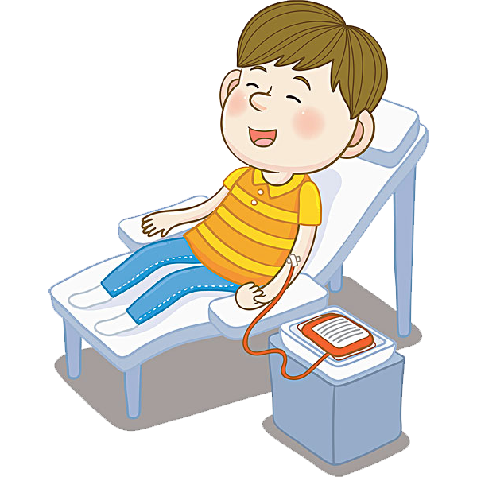
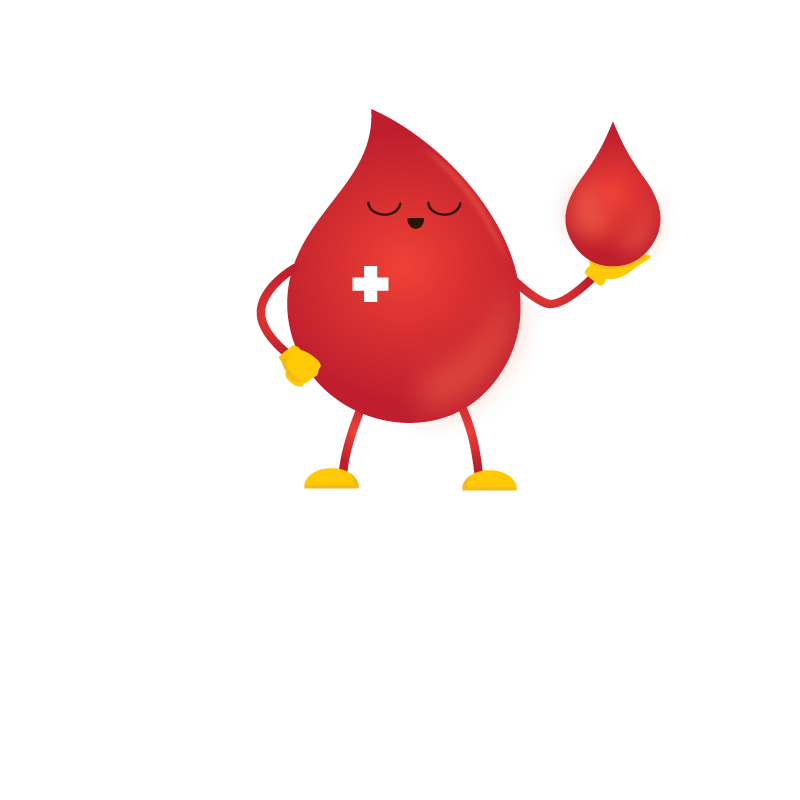

PORQUE DONAR
ÚNETE A NUESTRA CAUSA


ÚNETE A NUESTRA CAUSA
En el Perú se requieren 650 mil unidades de sangre anuales y actualmente se recolectan 350 mil; causando muchas muertes por escasez de unidades. Ante esta situación, buscamos salvar vidas por medio de la donación de sangre voluntaria, de calidad y no remunerada.